来源：https://hiac6nj36g5.feishu.cn/docx/YcMMdp8emoQCuSxoSG2cuYoKnrh
大家好，我是一诺，生财有术2023年8月航海、2023年10月续航视频号带货航海Rico团队志愿者！
初航船员34人，下船5人，上岸28人，上岸率28/29*100%=96.55%！以4250里程数，排名第六而收官！
续航船员27人，下船2人，上岸24人，上岸率24/25*100%=96%！以3740里程数，排名第二而收官！
两次21天航海结束了，收获甚多，真诚的对每一个生财的圈友说一句：
来到生财有术，一定要做一次志愿者！你会发现不一样的自己
作为第一次做志愿者的我，有很多话想说，所以就写了这个复盘!
我是今年四月份加入的生财有术，第一期志愿者招募的时候，我就想报名了，但一直觉得自己能力不够，没敢报名！
后来，星月大佬对我说：做志愿者可以更大程度的提升参与度！向上可以链接领队，学习管理能力；向下需要对船员负责，学习社群运营能力。这样就不会游走在航海的边缘，真正能学到东西！
我有过一次参加航海的经验，熟知航海的整个流程。深刻知道如果没有深度参与，就是在浪费时间。我不想再碌碌无为下去，不想一直在边缘游走！
所以，第二期志愿者招募的时候，我果断报名了，并且有幸成为了视频号带货航海的志愿者！更幸运的是在续航的时候也有幸被选中，完成了初航到续航的迭代！
我最初报名了视频号带货、小红书运营、小红书店铺三条船的志愿者！
在不确定能当上哪条船志愿者的时候，为了能为船员更好的服务，我又报名了选品特训、剪辑特训、图书共读（学会写作2.0）三条船！
确定成为视频号带货志愿者之后，写作对视频号带货作用并不大，我果断放弃了图书共读这条船！
这样视频号带货是实战项目！选品和剪辑都是做视频号必不可少的技能！可以为实战项目更好的服务！
续航的时候，因为首次航海的时候剪辑内容基本都已了解，为了有更多精力做视频号，所以只选择了视频带货和选品这两条船！
事实证明效果的确不错,有些船员只是报了视频号带货这条船，他们有相关的问题，我可以去提问，然后共享给小组船员！非常nice！👍
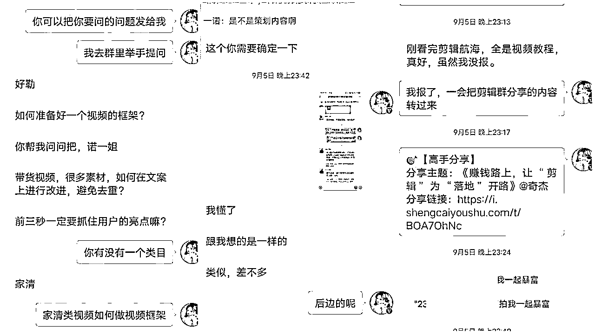
因为担心添加船员不知道如何沟通，怕到时候不知道问哪些问题，我提前准备了需要了解的问题，加入了讯飞输入法常用语中（虽然事实证明，并不能按照这个流程走，太过于死板，没有人情味）但是对熟悉船员也起到了一定作用。
破冰只要按生财的SOP操作，中间结合船员的朋友圈和聊天的感觉，建立起良好的沟通关系即可！
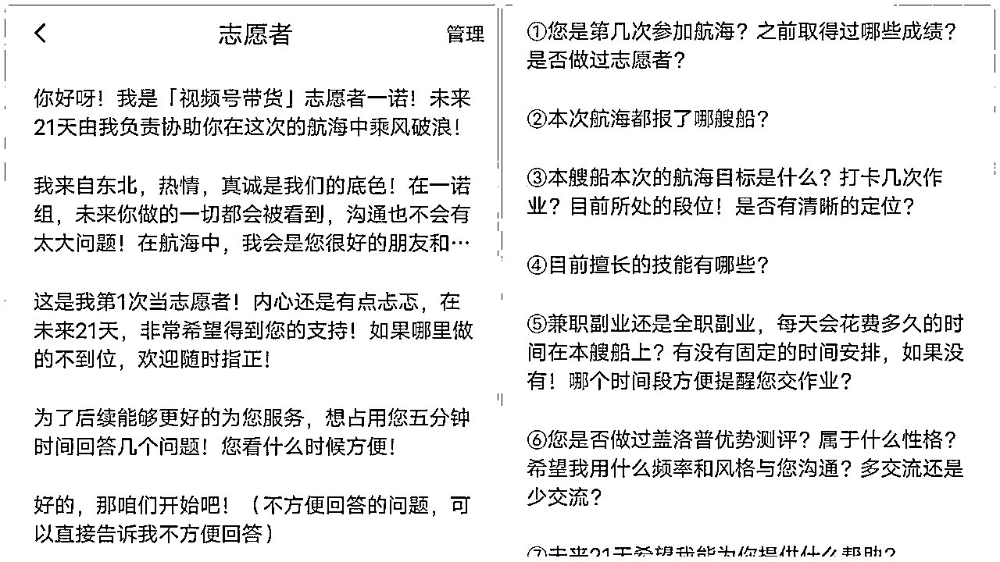
备注：大家别像我这么问，太招人烦！好像在面试一样！可以灵活一点
续航时可以通过初航时船员的打卡作业，了解他上次的收益和选择的赛道，进行沟通。
既可以让船员知道你对他的重视，增加亲密度，又可以有针对性的解决问题。
这次续航的总结非常感谢MD做的志愿者后台辅助脚本，方便了对船员的信息进行总结！还做了一个全家福！
脚本里面除了包括船员的星球头像，星球昵称，微信昵称，打卡统计等内容，还可以自己添加类目，我自己额外添加了
初航个人榜：方便通过序号找到船员的上期作业
打卡天数/里程数：方便了解船员打卡状态和打卡态度，以及变现能力
初航业绩分析：做好汇总，方便破冰时做出有效的沟通
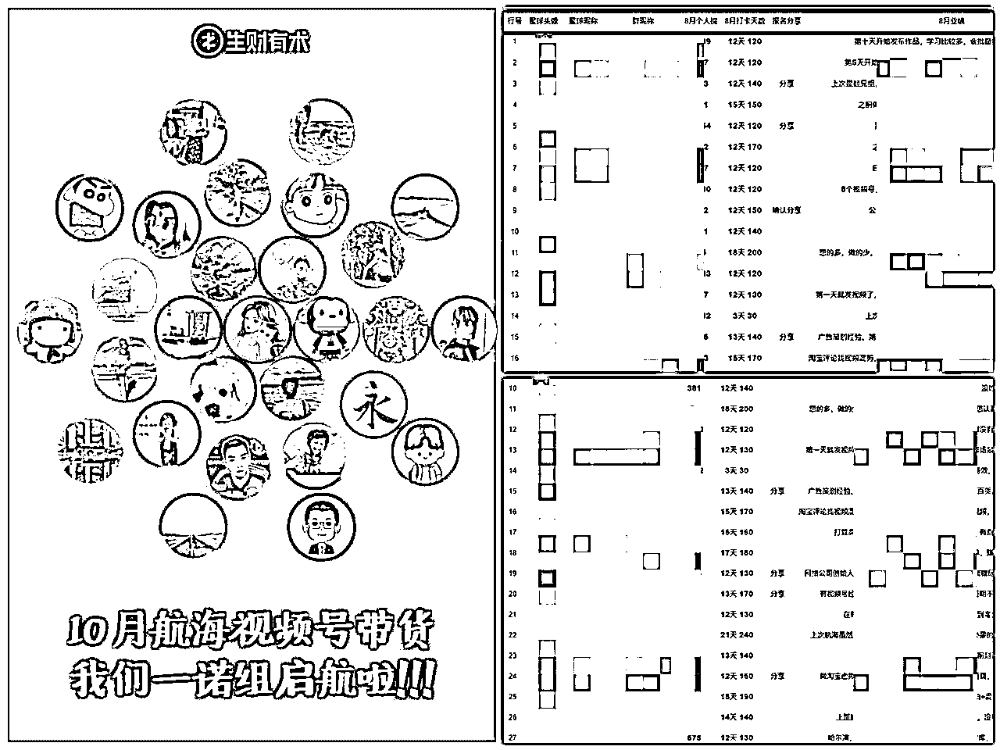
在航海中肯定会有一些资料，问题，话术需要提前准备！为了避免遗漏和出现差错，我建立了一个只属于自己一个人的群，有用的信息都会储备到这里，用的时候就信手拈来了！
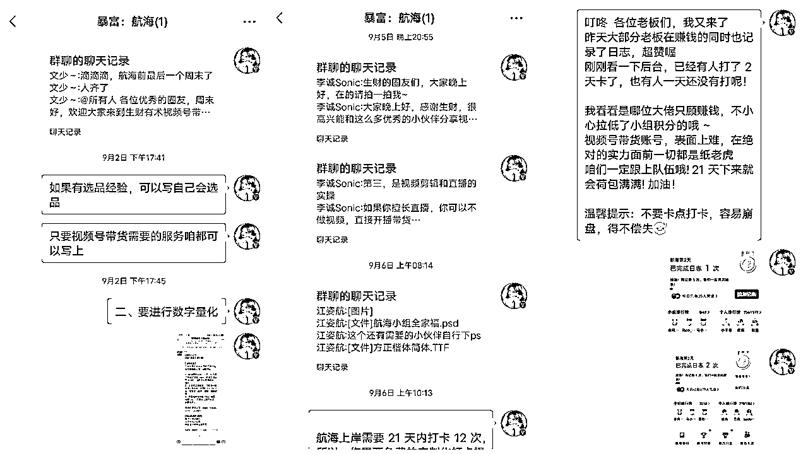
有过一次航海的经验，我特别知道航海手册的知识储备量有多大！如果没有操作过视频号带货的项目，第一次实战一定会被庞大的信息所压倒！所以管鱼丸要了视频号带货的合集并提醒大家可以先看往期的航海手册！可以在航海之前进行预热！
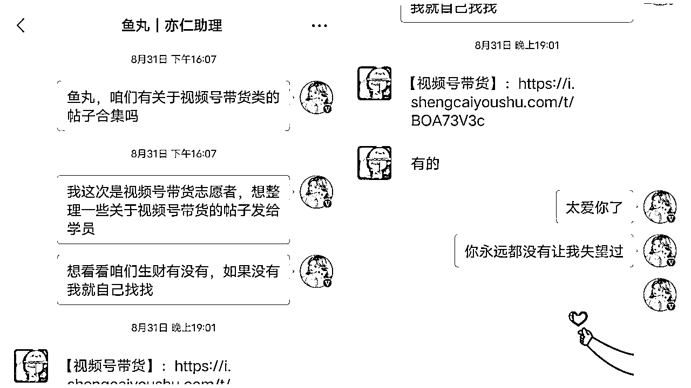
首先在加好友环节，我没有用统一的话术进行添加，而是选择了微信昵称+打招呼的形式。在打招呼之前提到名字，很明显能让对方知道你是用心的添加，而不是冷冰冰的机器人。第一印象很重要！
备注：有些名字是全称叫起来可能会显得少一些尊重，这种我会称呼为**老师，这种称呼，大概率不会出现差错！
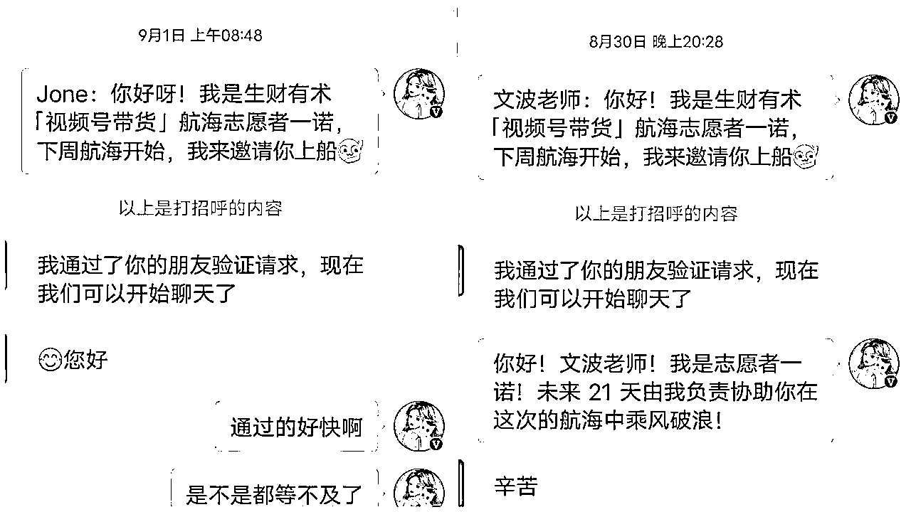
在和船员首次沟通的时候我采用了，生财有术志愿者培训视频中北野老师分享的经验：
在加上好友之后，不要着急立刻拉群，以为拉完群任务就完成了。要呵护这一段沟通时间，宁愿慢下来，也要沟通到位。
要明确自己的目标是：帮助船员完成一次又一次的行为改变，进而形成状态改变，最终拿到结果，并非只是为了拉群。
秉承着这一原则，我开始了和船员的首次沟通！和第一个船员沟通的时候我采用了准备好的话术，发现过于死板!
所以，后续没有再用准备好的话术，而是根据不同情况采用不同的应对方式，主要用了以下两个技巧：
我是东北人，给人的印象就是热情，真诚，好沟通。生财的理念是真诚、利他。
所以二者结合起来，我的自我介绍第一句就是：我是东北人，热情真诚是我的底色。
减少距离感，直接就拉近了彼此的距离。
就是当你和别人说话的时候，提出一个问题，对方给你回应之后，你一定要先赞一下，然后再接着问下一个问题。
这种方式使沟通变得更加顺畅，丝滑。
结合了以上几点，首次沟通非常啊nice！获得很多认可！
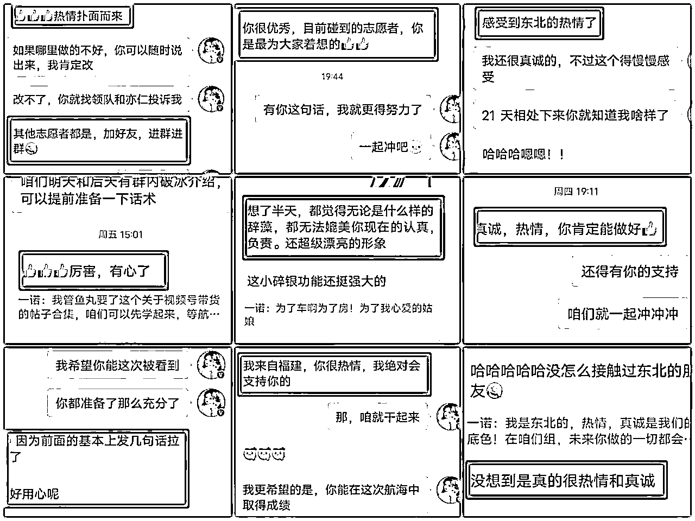
小组破冰，是大家真正认识的第一步，为了更好的调动大家的积极性，我在破冰之前私聊了每个人,提前预约了大群破冰之前先在小组破冰的时间。希望得到大家的支持！
因为首次沟通的时候基本都已经很熟悉了，所以大家都比较支持我，当天晚上破冰活动氛围非常好。
当然，既然想要破冰，想要增加社群凝聚力，就不能把大家喊来啥也不说就散场，一定要准备点干货的。
我结合了之前其他志愿者分享的破冰话术和优秀志愿者的复盘！主要做了以下几点分享：
①根据所在社群性质，进行针对性介绍，比如视频号带货群：可以介绍自己会剪辑、会选品等特长
②进行数字量化、展示所取得的成绩。成绩+数据+获得感都拉满。
③主打差异化，加上公众号链接或者精华帖文章介绍。
④在大群内发完自我介绍，同小组人互相托举，不要让自我介绍沉下去。
设定航海目标，进行目标拆解！分析里程数的价值！
明确自己的水平，秉承“每进一步有一步的欢喜”的原则，保持乐观、主动的态度，亲自下场，把手弄脏，做好规划，主动交流，真诚利他！一定会取得成果！
①实战指导
强调虽然我没有做过视频账号带货，但是愿意亲自下场，和大家一起操作！有问题我可以去找领队解决！大家有任何问题尽管找我！
②提供情绪价值
明确航海中肯定会遇到各种挫折，大家情绪低落的时候可以找我！一起抱团取暖，进步！
一顿疯狂输出之后，群内氛围非常好，不仅有船员佳与佳整理了话术，船员Payne做了思维导图，更得到了领队的认可。
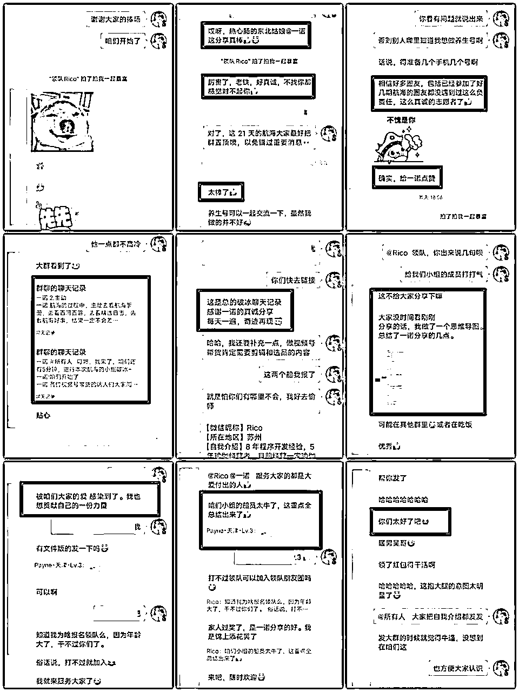
续航的船员都是已经有过航海经验和进行了实操的船员，大家更需要的是方法和榜样的力量！这次的小组破冰主要分享了以下几点：
①肯定续航的小伙伴都是实战派
③明确续航的艰苦
②强调志愿者可以提供的价值
①分享初航时教练提供的选品方法
②多看航海好事和精选日志，找到可以对标的船友，去学习去链接
③有问题去看百问百答，大部分的问题这里都能找到答案
④靠近大佬，红包开路，多多学习
高手分享主要得益于在初航时我们小组和平老师21天变现10w+的经验做了一次组内的分享，当时的反响就非常热烈，干货满满！
经过和平老师的同意，我将此分享发给了续航的船员，大家都表示非常有价值！
21天变现10w+,让大家看到了希望，斗志自然就有了！
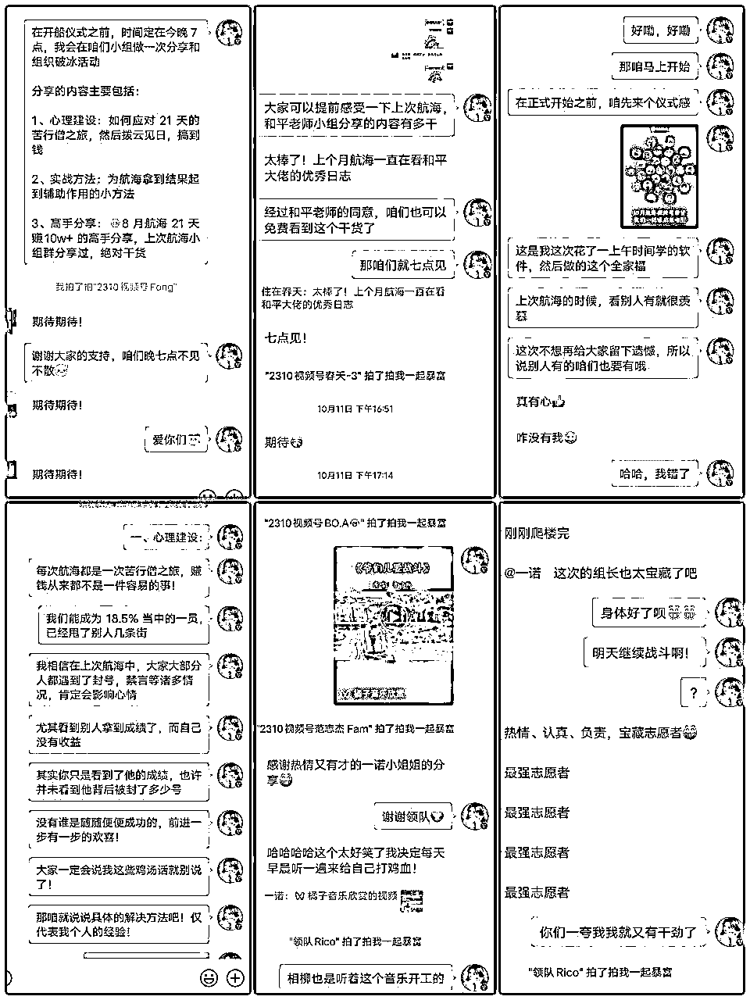
作业点评可以根据日志内容进行相应的评价
基本主要包括以下几点：适当鼓励、表示肯定、方法认同、解决问题。
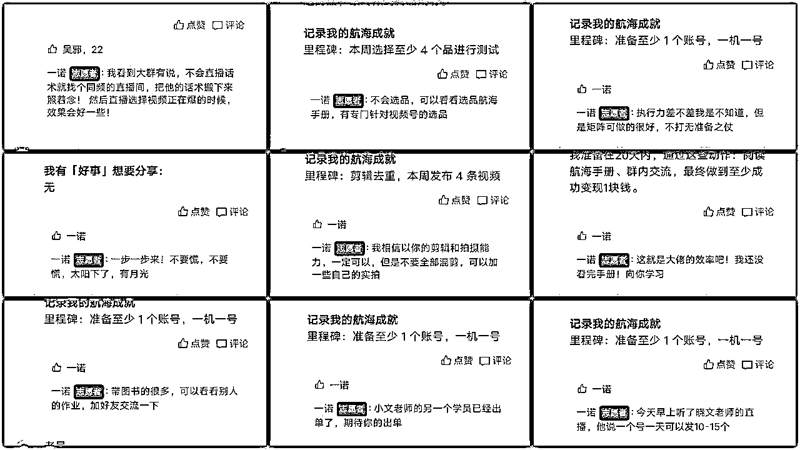
看学员的作业并且进行点评，既可以了解学员的操作进度，又能让学员感觉到自己的重视，航海过程如果迟迟没有拿到结果会很枯燥！
如果船员能感觉到你的陪伴，知道自己并不是一个人，干劲也会高很多！
有些小伙伴写完作业之后，并没有回头看的习惯，很容易错过我的评价
也有些船员不出结果，会沮丧，会颓废，会内耗！
所以有时候，我看完作业也会和船员私聊，鼓励和交流！
既能增加与船员之间的粘性！又能学习到很多经验！
人心换人心，你真我也真！沟通的多了，船员是能感受到这份责任心的，后续无论催打卡还是其他活动都会变得很丝滑！
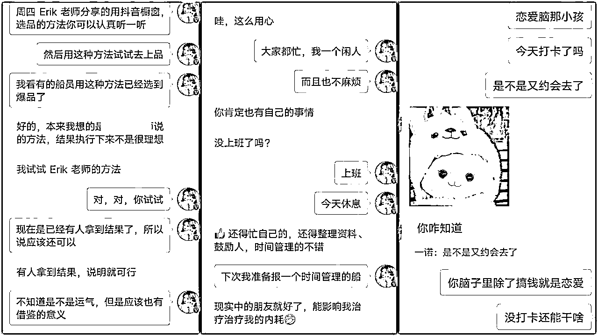
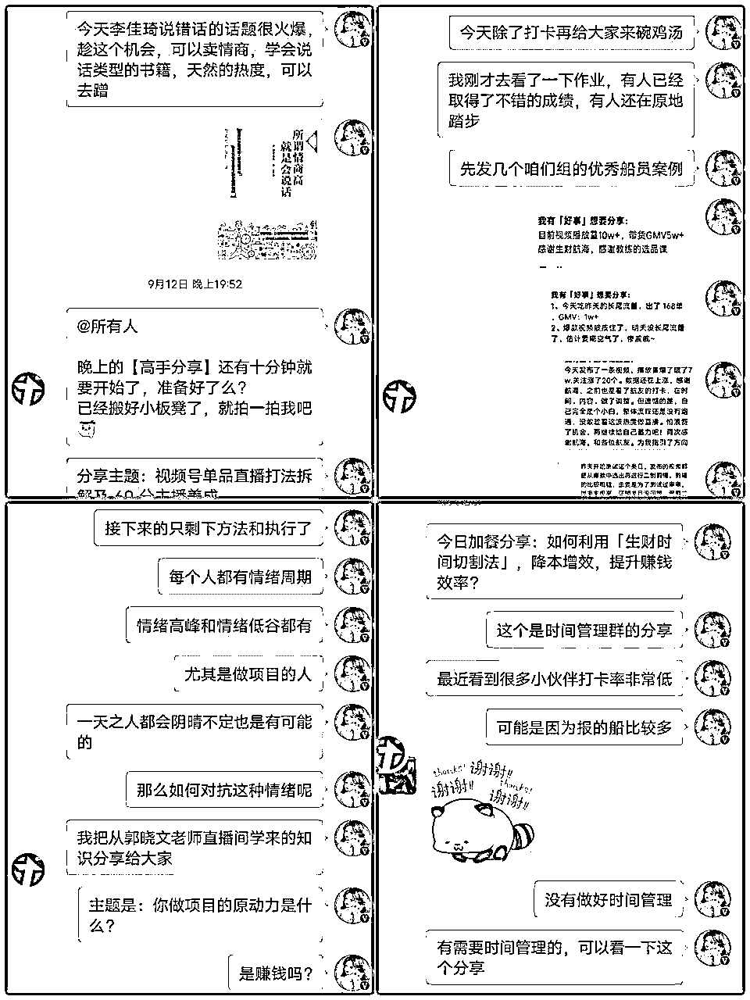
除了初航分享的内容，续航又加了以下几点：
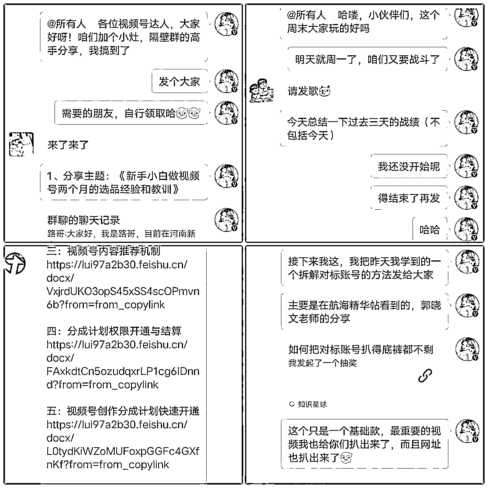
总之就是把能和航海有关的资料都分享给大家，大家根据自己的需求去选择！
小组船员和平在航海期间19天,GMV15.8W，佣金10W变现，在领队Rico老师的鼓励下，我邀请了和平老师在小组进行了分享！
谁说不说，这小伙子一点都不藏私，所有的经验全部倾囊相授，分享也取得了很好的效果！
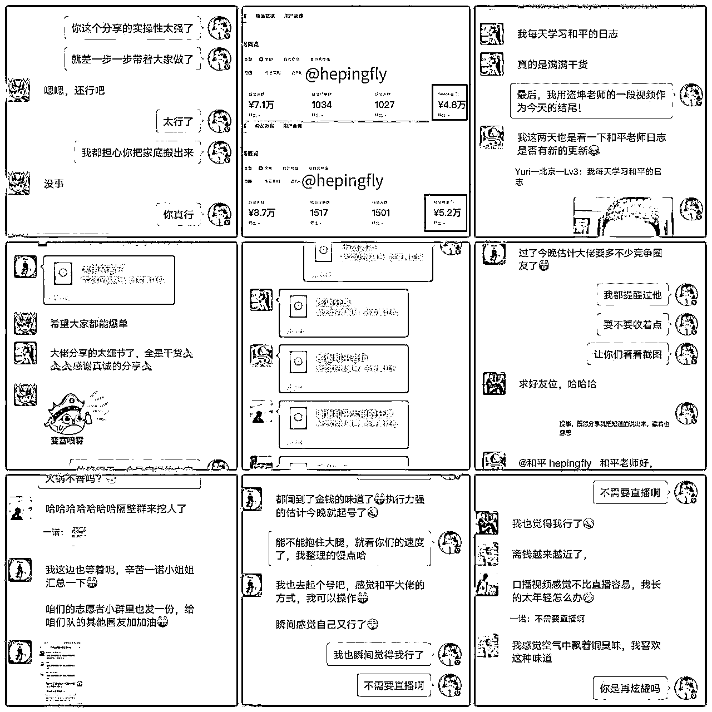
备注：总结一下做小组分享需要的注意事项
①小组成员比较少，需要提前私聊每个人，确保能准时参加，否则容易冷场！
②要做好带动作用，结束以后发个小红包，不能让分享者寒了心！
③提前熟悉分享内容的精华，渲染价值，几个视频号多少天赚了多少钱！
这一点我做的很随意，没有特意的话术，因为沟通的比较多，所以在催打卡这件事上就不用很费力气！
这一点又充分印证了北野老师的分享：要呵护首次沟通的时间，宁愿慢下来，也要沟通到位！
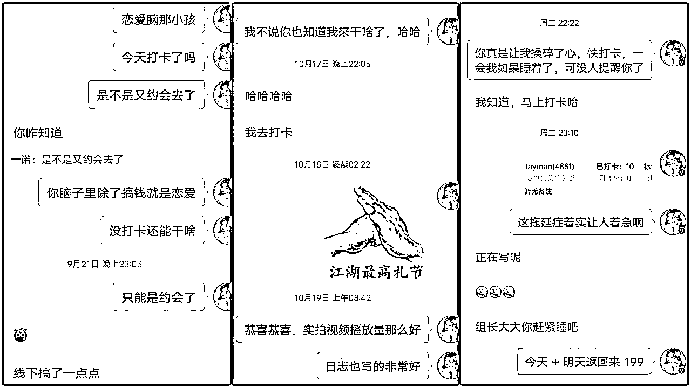
靠岸不是航海的结束，开船之前有小组破冰激励大家前行！靠岸也一定要做个完美的告别仪式！鼓励大家持续航行！
既能增加大家在航海中的体验多又能做个复盘，总结让大家明确自己在整个航海中所处的位置，以后如何更好的调整方向！
初航的时候只做了简单的告别，续航做了总结和基本指导
a、总结小组成绩和利弊分析
b、结合续航成绩报告分析视频号的趋势
c、自我评价和分析
d、写给每个船员的话
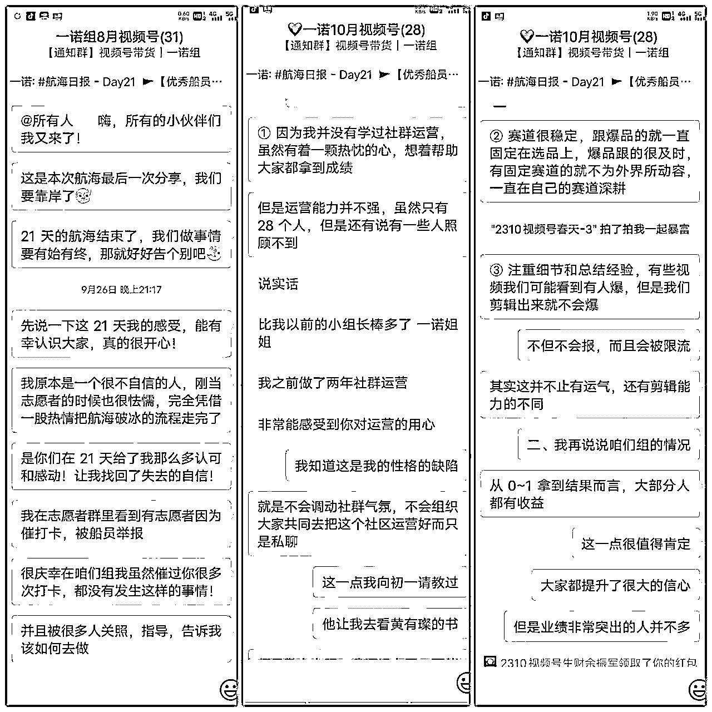
在两次做视频号志愿者过程中，遇到了很多让我感动的人和事！如果说做志愿者中收获最大的是什么，那绝对是遇到了这么多让我暖心，给我力量的人！
作为没有任何运营经验的我，当初选择做志愿者的时候，完全凭着一腔孤勇向前走！是领队Rico帮我解决各种问题，不仅提供方法，还提供情绪价值！
带着我一步一步从志愿者小白成长成为一名优秀的志愿者，并且在领队的鼓励下，还带领船员做了一次小组分享，反响非常好！
他的每一次肯定和鼓励都给我带来了莫大的底气和自信，从航海到现在我改变了很多，让我从一个自卑的社恐逐渐开始接受自己，认可自己！
这种收获，远远大于学会某一项技能，因为这种能量可以让自己突破束缚，迎接任何挑战！
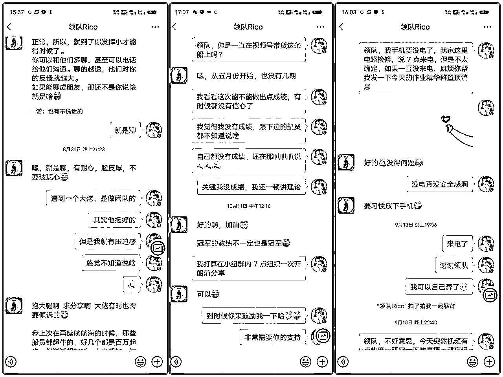
和平：不仅毫无保留的免费在小组群内无偿分享自己的实操经验，并且帮我分析视频为什么没有流量的原因，帮我诊断账号，分享他的操作心法！可谓是手把手在教我！
月兑：我在做视频号初期，想做养生号，他不仅帮我找对标账号，而且自己取得成绩了，更是把他的号直接告诉我，给我思路，让我对标每个细节。毫无保留的教我！并且监督我去发视频，去剪辑！
吴耘：吴哥是一个社群管理和心理疏导特别牛的导师，因为第一次做志愿者会很紧张，他总是能及时的帮我疏导情绪，并且每次我在群内发言的时候都会给我积极的正反馈，从来不会让我冷场！
时空：我在他身上看到了一个新人的飞速成长，工作的同时，视频号，抖音图文都做出了成绩，并且毫无保留的把自己的出单产品分享给我，让我去跟进！
久久：从久久身上我看到了青年大学生的活力，满满的正能量。懂得认可和尊重别人的付出，及时给出正反馈，情绪价值提供的特别到位，就是让人很喜欢的孩子！
余振军：作为专业团队投流的视频号选手，本以为他会很高冷，结果特别热情，团队谁有问题都会积极回答，帮助了很多船员！
Vicent谢：在做养生号这个赛道，他在十一期间拿到了成绩，知道我也在做这个赛道的时候，看到合适的直播间，都会分享给我，告诉我直播间如何搭建，哪些品适合操作！
橙橙子：是一个特别善于总结，善于发现自己的短板，发挥特长去不断优化迭代的姑娘，开始混剪不好，就利用直播去跟进，找到了自己的方向！
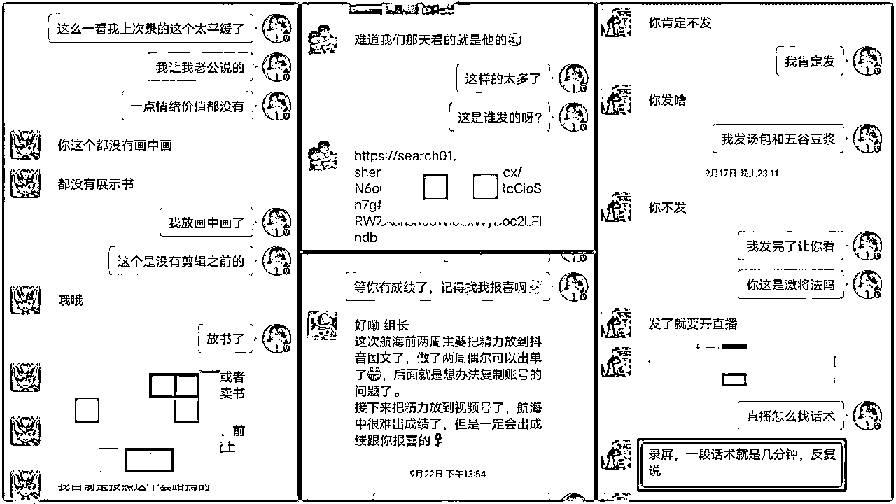
如果让我一一去介绍，我能找到每个人给我带来的正反馈、从他们身上学到的知识。真的让我从多个视角了解到了做视频号的方向。
无论是在航海中，还是航海结束之后，我们已经不只是组长和船员的关系，还是朋友，是互相帮助的战友！
凌心：我和凌心是在学科资料项目相识的，她做的副业时间比我长，看的比我远，如果不是她带我来生财有术，我可能还在原地徘徊，不可能结识到这么多优秀的人，加入这么高能量的圈子，她就是我的领路人，非常感谢她。
梁靠谱：我当时是通过靠谱团队加入的生财有术，无论是从个人魅力还是能力方面，她的能量都一直在影响着我，个人魅力杠杠的，每次能量低迷的时候我都会去她的视频号溜达一圈，然后就能量满满了！
理白：通过靠谱结识了理白，然后加入了他的陪伴群和知识星球，群内每天都会分享干货知识，虽然不能每篇都看，但是在关键时刻完全可以搜索到自己想用的知识，不瞒大家说：这次航海如何破冰，就是从他那里学来的。
星月：因为星月大佬的鼓励：做志愿者可以更大程度的提升参与度！向上可以链接领队，学习管理能力；向下需要对船员负责，学习社群运营能力。这样就不会游走在航海的边缘，真正能学到东西！让我有勇气报名了志愿者。
在盖洛普优质测评中我的取悦才干排位32，沟通才干排位31，自信才干排位23，这些排位靠后的才干无一不在证明我是一个不善于沟通和社群运营的人！
我清楚的知道自己有多不自信，也知道自己做社群运营的短板在哪里！除了热情和负责，可谓是没有技巧，但是两次21天的航海中，在大家的肯定中，我找回了丢失的自信!
在航海过程中，不断的倒逼自己去学习，去看往期志愿者的优秀总结，在志愿者社群运营方面成长了很多。最主要的是开始愿意和外界沟通，开始积极争取每一次成长的机会。
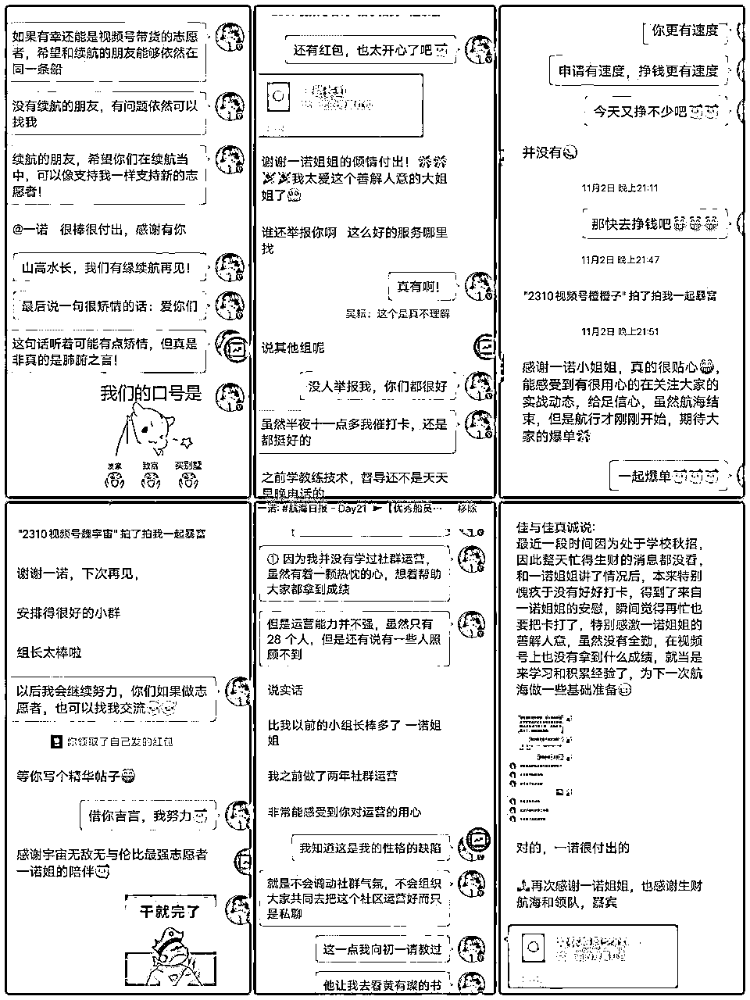
在运营方面还是有很多值得提高的方面
a、不懂得如何调动大家一起去参与社群的运营工作中。基本所有的工作都是我一个人来做。这样既增加了我的工作量，也降低了船员的参与度，导致有些船员依然收获不是很大!
b、整个提醒打卡的过程都是几乎全员跟进，并且没有统一的话术，这样工作量也会增大很多，应该养成整理sop的习惯!
c、不善于主动链接。有很多优秀的志愿者，我知道他们很优秀，看了他们的帖子，也很想去链接，去学习，但是还有胆怯的心理，后来在被链接几次以后，才逐步开始主动链接其他人。
新的航海即将开始，希望我的复盘能起到抛砖引玉的作用，给大家带来更多的社群运营灵感，更好的为船员服务
我们下次航海见～